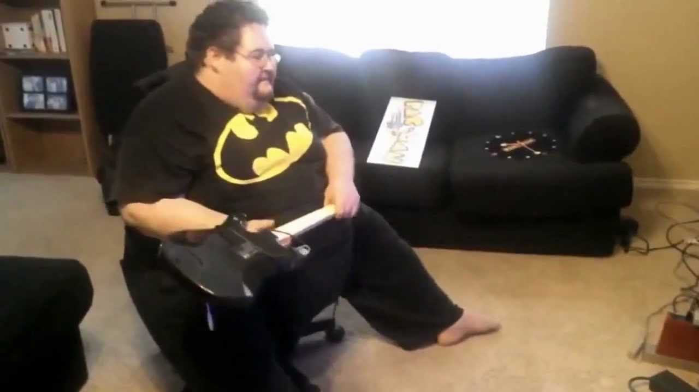
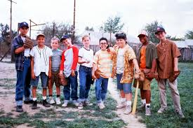

As technology in america grows more advanced so does the obesity and unhealthy living and this is first displayed with our children. Childern are the first to be affcted in society. Due to this rapid growth in society there's less and less resaon for aduilts and children to stay active. Even though the technology advance us it inturns cripples our independency aswhell. Now a days you don't see children going outside to play in parks with other kids they would rather play in the house on the xbox or the play station. Childhood obesity is just one of the many effect of this, not to mention the lack of communication other issues start to occur such as hindering social skills and even mental disoreders.
 Exercise 3x times a week for at least 30 mins a day
Exercising is 30% percent of staying in shape dieting properly and maintaining what you eat is key and thats 70% percent
Find a way you enjoy exercising or find an exercise you enjoy and start or finish your work with that exercise
Hang around others that wants to better themselfs
Drinking water is great for your body and your face
Get alot of sleep
MAJOR KEY you don't have to be perfect just try !!
Don't just wait to go to the gym to be active